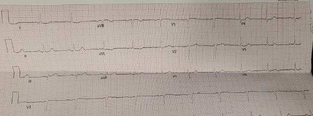
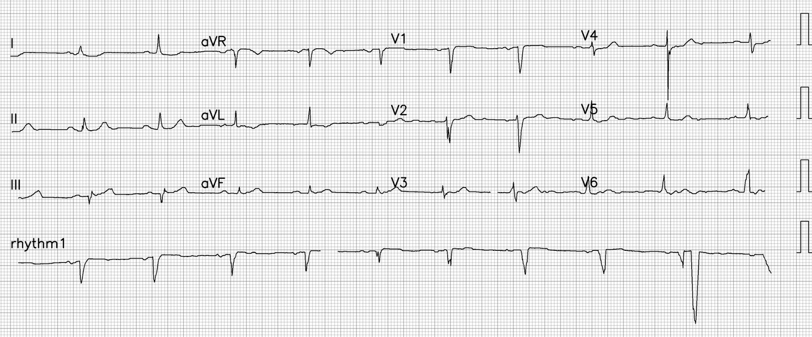
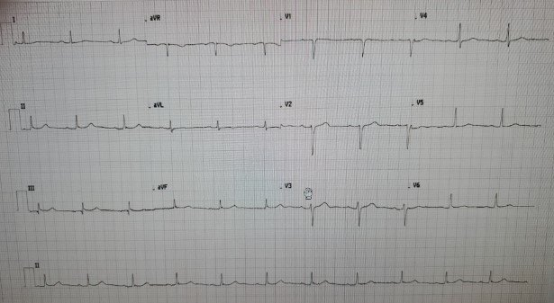
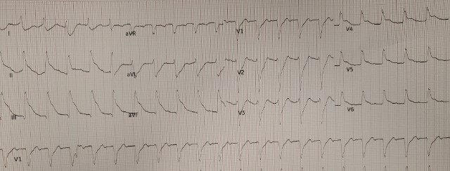
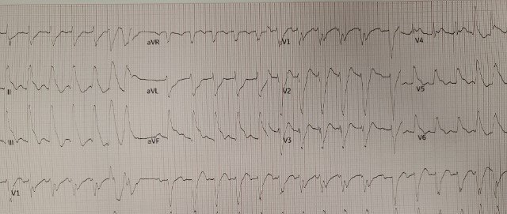
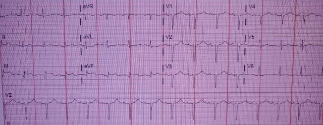
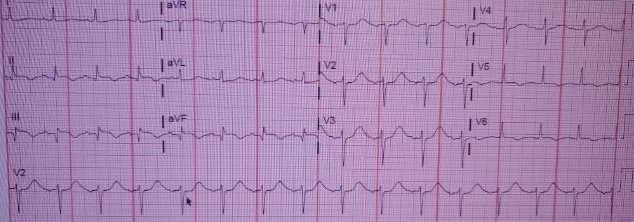
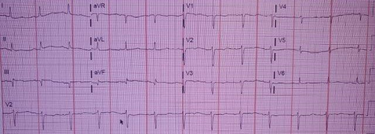
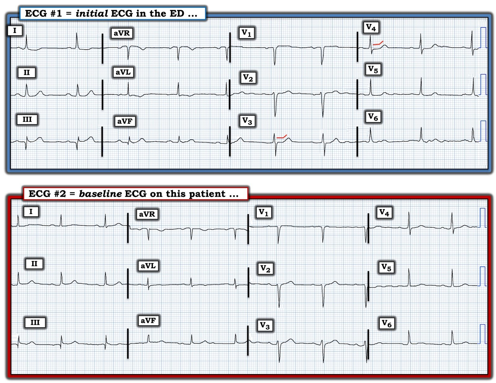

23/11/2022 — Một người đàn ông ở độ tuổi 70 bị đau ngực
Bản dịch tiếng Việt của bài "A man in his 70s with chest pain" – Dr. Smith’s ECG Blog. Giữ nguyên toàn bộ 10 hình ảnh của bản gốc.
Ca bệnh do BS Rachel Plate gửi, Pendell Meyers viết bài
Một người đàn ông ở độ tuổi 70 đến viện vì đau ngực khởi phát đột ngột khi nghỉ và đã kéo dài 2 giờ. Cơn đau vẫn còn tiếp diễn lúc đến viện. Ông cũng ghi nhận một “cảm giác lạ” ở cả hai tay. Ông nói cảm giác này giống các cơn đau tim trước đây. Ông có tiền sử nhồi máu cơ tim nhiều lần và phẫu thuật bắc cầu chủ vành (CABG), cùng với đái tháo đường, tăng huyết áp và rối loạn lipid máu.
Đây là điện tâm đồ lúc phân loại (triage) của ông:


Phiên bản PM Cardio:


Không kèm bất kỳ thông tin nào khác, tôi gửi điện tâm đồ này cho BS Smith, và ông trả lời: “Tôi nghĩ là thật. V3. Cả STD ở V4-5 nữa.”
Ý ông là: ông cho rằng các dấu hiệu OMI thành dưới và thành sau là thật. Tuy các dấu hiệu ở thành dưới có hình thái chưa đặc hiệu 100% (nhưng vẫn rất đáng lo ngại, nhất là về sau khi có điện tâm đồ nền để so sánh), sự kết hợp với ST chênh xuống (STD) không giải thích được ở V3-V4 (OMI thành sau) cũng làm cho OMI thành dưới trở nên chắc chắn hơn.
Nói cách khác, điện tâm đồ này cho thấy nhịp xoang, phức bộ QRS bình thường, và:
–OMI thành dưới: ST chênh lên (STE) ở III, sóng T tối cấp ở chuyển đạo III, STD soi gương và sóng T đảo ngược (TWI) ở aVL.
–OMI thành sau: STD không giải thích được, tối đa ở V3-V4.
Điện tâm đồ cũ trong hồ sơ (có lẽ là điện tâm đồ “nền”):


Troponin T ban đầu của ông là 15 ng/L (mới chỉ hai giờ kể từ khi khởi phát đau).
Khoảng một giờ sau, ông được phát hiện nằm trên sàn trong tình trạng ngừng tim tại khoa cấp cứu. Ông được hồi sinh tim phổi rồi được sốc điện thoát khỏi rung thất (VF).
Sau ROSC 1 (khoảng 10 phút sau khi tái lập tuần hoàn tự nhiên):


Sau ROSC 2 (khoảng 20 phút sau khi tái lập tuần hoàn tự nhiên):


Troponin lần hai của ông là 46 ng/L. Không đo thêm troponin lần nào nữa.
Ông được đưa vào phòng thông tim (cath lab), tại đây phát hiện tắc hoàn toàn cấp tính cầu nối tĩnh mạch hiển (SVG) tới RCA, và đã được đặt stent.
Ông bị sốc tim, cần đặt Impella trong vài ngày sau thông tim.
12 giờ sau thông tim:


36 giờ sau thông tim:


5 ngày sau thông tim:


Ông ra viện với chức năng thần kinh nguyên vẹn.
Những điểm cần học:
Dù kín đáo, điện tâm đồ ban đầu trong ca này vẫn có thể được nhận ra là OMI. Nhận diện sớm hơn có khả năng dẫn tới kết cục tốt hơn, và trong ca này có thể đã giúp phòng ngừa ngừng tim và cải thiện kết cục lâu dài.
ST chênh xuống tối đa ở V1-V4, trong bối cảnh có triệu chứng hội chứng vành cấp (ACS) và không giải thích được bằng bất thường QRS hay rối loạn nhịp nhanh, cần được xem là OMI thành sau cho đến khi chứng minh được điều ngược lại.
Cả sóng T tối cấp lẫn OMI thành sau hiện đều đã được ACC chính thức công nhận là “tương đương STEMI”.

===================================
BÌNH LUẬN CỦA TÔI, bởi KEN GRAUER, MD (23/11/2022):
===================================
Những ca mà các dấu hiệu điện tâm đồ ban đầu còn kín đáo trước khi biến đổi ngoạn mục — luôn để lại ấn tượng. Đó chính là tình huống trong bài hôm nay của BS Plate và BS Meyers. Tôi tập trung bình luận vào những dấu hiệu kín đáo ban đầu này.
- Để rõ ràng, trong Hình 1 — tôi đã đặt lại 2 bản ghi đầu tiên của ca hôm nay.
Bệnh sử trong ca hôm nay — là một người đàn ông ở độ tuổi 70 đến khoa cấp cứu (ED) vì đau ngực kéo dài 2 giờ, cơn đau vẫn còn khi ông đến khoa cấp cứu. Bản ghi ban đầu của ông ( = điện tâm đồ #1) được ghi vào lúc này.
- Cần lưu ý: Bệnh nhân này có tiền sử nhồi máu cơ tim trước đây và CABG.
CÂU HỎI:
Khoảng 1 giờ sau khi ghi điện tâm đồ #1 — bệnh nhân được phát hiện nằm trên sàn khoa cấp cứu trong tình trạng ngừng tim.
- Xét bệnh sử ở trên và điện tâm đồ ban đầu của bệnh nhân này trong Hình 1 — Lẽ ra bạn có nên nghi ngờ rằng các thay đổi ST-T ngoạn mục thấy trên bản ghi sau ROSC sẽ xuất hiện hay không?
- Lẽ ra nên ghi điện tâm đồ thứ 2 vào lúc nào?


SUY NGHĨ CỦA TÔI về bản ghi ban đầu:
Rõ ràng chúng ta không thể dự đoán rằng bệnh nhân này sẽ ngừng tim trong vòng một giờ sau khi đến khoa cấp cứu, với những thay đổi điện tâm đồ ngoạn mục thấy trên bản ghi sau hồi sức ở trên. Nhưng chúng ta không nên ngạc nhiên.
- Chúng tôi đã đăng nhiều ca trên Dr. Smith’s ECG Blog về những dấu hiệu điện tâm đồ kín đáo rồi nhanh chóng tiến triển thành thay đổi sóng ST-T ngoạn mục. Đôi khi — các dấu hiệu kín đáo ban đầu chỉ đơn giản là một pha “giả bình thường hóa” có thể xảy ra ngay sau khi một động mạch vành bị tắc cấp tự mở thông trở lại. Chúng tôi không biết liệu ST chênh lên rõ rệt có thể đã xuất hiện trước hình ảnh của điện tâm đồ #1 trong 2 giờ trước khi bệnh nhân hôm nay đến khoa cấp cứu hay không.
- Điểm MẤU CHỐT: Khi còn chưa chắc chắn liệu một điện tâm đồ ban đầu thể hiện dấu hiệu “mới” hay “cũ” — ghi lại điện tâm đồ sớm thay vì để muộn (tức là trong vòng ~10-20 phút) là một trong những cách tốt nhất để phân biệt! Điều này dường như đã không được thực hiện trong ca hôm nay.
- Bệnh nhân hôm nay thuộc nhóm nguy cơ cao (tức là thuộc nhóm có “tỷ lệ hiện mắc” cao đối với biến cố mạch vành cấp). Ông có bệnh mạch vành đã biết (với các lần nhồi máu cơ tim trước đây & CABG) — và ông đến khoa cấp cứu vì khó chịu ở ngực mới khởi phát. Ngay cả trước khi nhìn vào điện tâm đồ của ông — “tư duy” của chúng ta cần là giả định có một biến cố tim cấp cho đến khi chứng minh được điều ngược lại.
Giống như BS Smith — tôi được xem điện tâm đồ ban đầu của bệnh nhân này mà không có bất kỳ thông tin lâm sàng nào. Suy nghĩ của tôi như sau:
- Nhịp trên điện tâm đồ #1 là nhịp xoang. Sóng Q lớn ở chuyển đạo III (và sóng q nhỏ ở phức bộ đầu tiên của chuyển đạo aVF) có thể là dấu vết cũ của các lần nhồi máu cơ tim trước đây. Nhưng sóng T ở mỗi chuyển đạo dưới (nhất là ở chuyển đạo III) trông có khả năng tối cấp (tức là cao hơn và “mập” hơn ở đỉnh so với dự kiến, xét theo biên độ QRS ở các chuyển đạo này).
- Tuy sóng ST-T dẹt ở chuyển đạo I, cùng sóng T đảo ngược nhẹ ở chuyển đạo aVL trông không có vẻ cấp tính — hình ảnh sóng ST-T ở các chuyển đạo này không bình thường, và có thể là thay đổi soi gương.
- Nhìn chung, hình ảnh sóng ST-T ở các chuyển đạo trước tim trông không đặc hiệu — ngoại trừ chuyển đạo V3 và V4. Đoạn ST ở V3 và V4 rõ ràng bị thẳng đuỗn, với gợi ý ST chênh xuống nhẹ, điều bình thường không thấy ở các chuyển đạo này (các đường MÀU ĐỎ trong Hình 1).
- ĐIỀU CỐT LÕI: Xét như một điện tâm đồ đơn lẻ (tức là không có bất kỳ bản ghi cũ nào để so sánh — và thậm chí không biết bệnh sử) — tôi cho rằng bản ghi ban đầu này đã làm dấy lên lo ngại về khả năng có một biến cố tim cấp.
- Điểm MẤU CHỐT: Tuy lúc đầu tôi chưa chắc chắn rằng sóng T ở các chuyển đạo dưới là thay đổi tối cấp — tôi biết rằng ST thẳng đuỗn kèm chênh xuống nhẹ ở chuyển đạo V3,V4 là không “bình thường”. Cần thêm thông tin để ra quyết định tối ưu.
- Một khi đã biết bệnh sử ở trên (tức là một bệnh nhân nguy cơ cao bị đau ngực mới khởi phát) — các dấu hiệu trên điện tâm đồ #1 phải được diễn giải là cấp tính cho đến khi chứng minh được điều ngược lại!
- Một khi đã biết bệnh sử ở trên — sự cần thiết phải ghi lại điện tâm đồ sớm thay vì để muộn (tức là trong vòng ~10-20 phút tiếp theo) hẳn đã phải rõ ràng.
So sánh với điện tâm đồ cũ:
- So sánh từng chuyển đạo của điện tâm đồ #1 với một bản ghi trước đây của bệnh nhân này ( = điện tâm đồ #2 trong Hình 1) — cho thấy không còn nghi ngờ gì rằng các thay đổi kín đáo trên điện tâm đồ #1 là mới. Tuy sóng Q ở chuyển đạo III quả thực đã có từ trước — kích thước và hình dạng sóng T ở mỗi chuyển đạo dưới đều không có gì đáng chú ý trên bản ghi cũ.
- Sóng ST-T ở các chuyển đạo bên cao I và aVL chỉ đơn giản là dẹt trên bản ghi cũ — so với ST chênh xuống nhẹ ở chuyển đạo I và sóng T đảo ngược nông ở chuyển đạo aVL hiện có trên điện tâm đồ #1.
- Các chuyển đạo trước tim trên bản ghi cũ cho thấy sóng ST-T dẹt không đặc hiệu. Tuy nhiên, đoạn ST thẳng đuỗn kèm chênh xuống nhẹ thấy ở chuyển đạo V3 và V4 của điện tâm đồ #1 thì không có trên điện tâm đồ nền của bệnh nhân này.
- BÀI HỌC cần rút ra: Xin nhấn mạnh — Rõ ràng chúng ta không thể dự đoán từ điện tâm đồ #1 rằng bệnh nhân này sắp bị ngừng tim. Tuy nhiên, xét bệnh sử của bệnh nhân có bệnh mạch vành đã biết này — các dấu hiệu điện tâm đồ trên bản ghi ban đầu hôm nay phải được giả định là chỉ điểm OMI đang diễn ra cho đến khi chứng minh được điều ngược lại. Ghi một điện tâm đồ lặp lại trong vòng 10-20 phút tiếp theo có thể đã phát hiện những thay đổi sóng ST-T động có giá trị chẩn đoán. Và một khi đã có điện tâm đồ cũ để so sánh — mọi nghi ngờ về tính cấp tính của quá trình này lẽ ra đã phải được xóa bỏ.